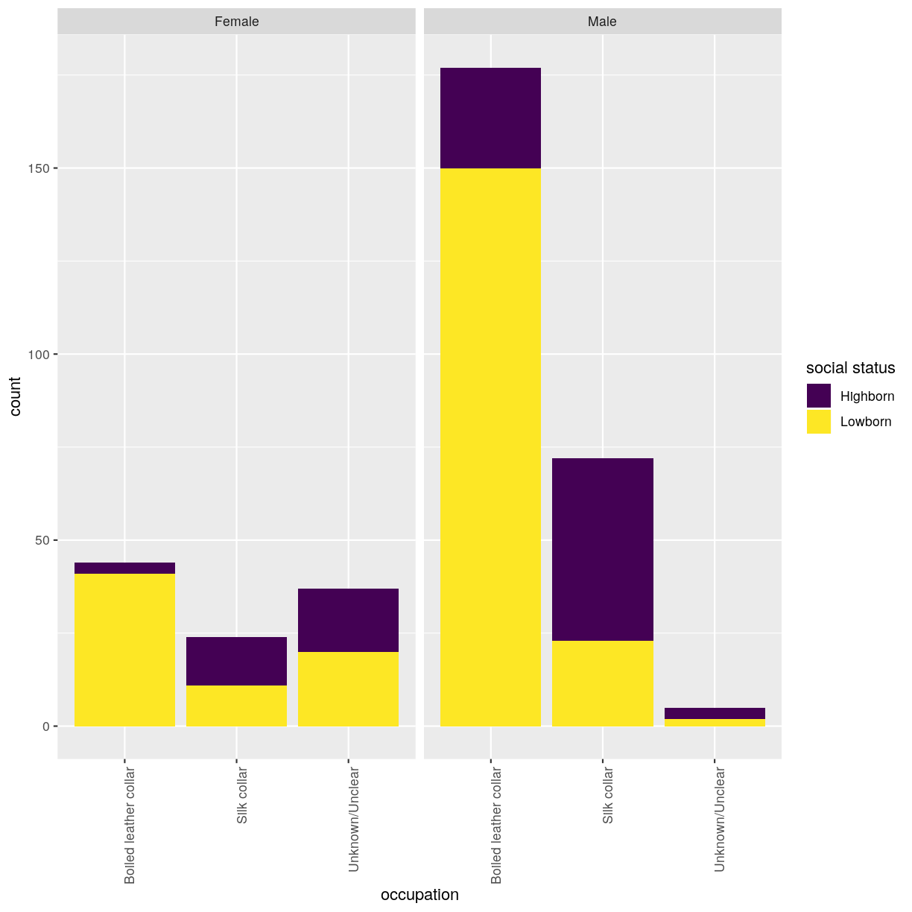
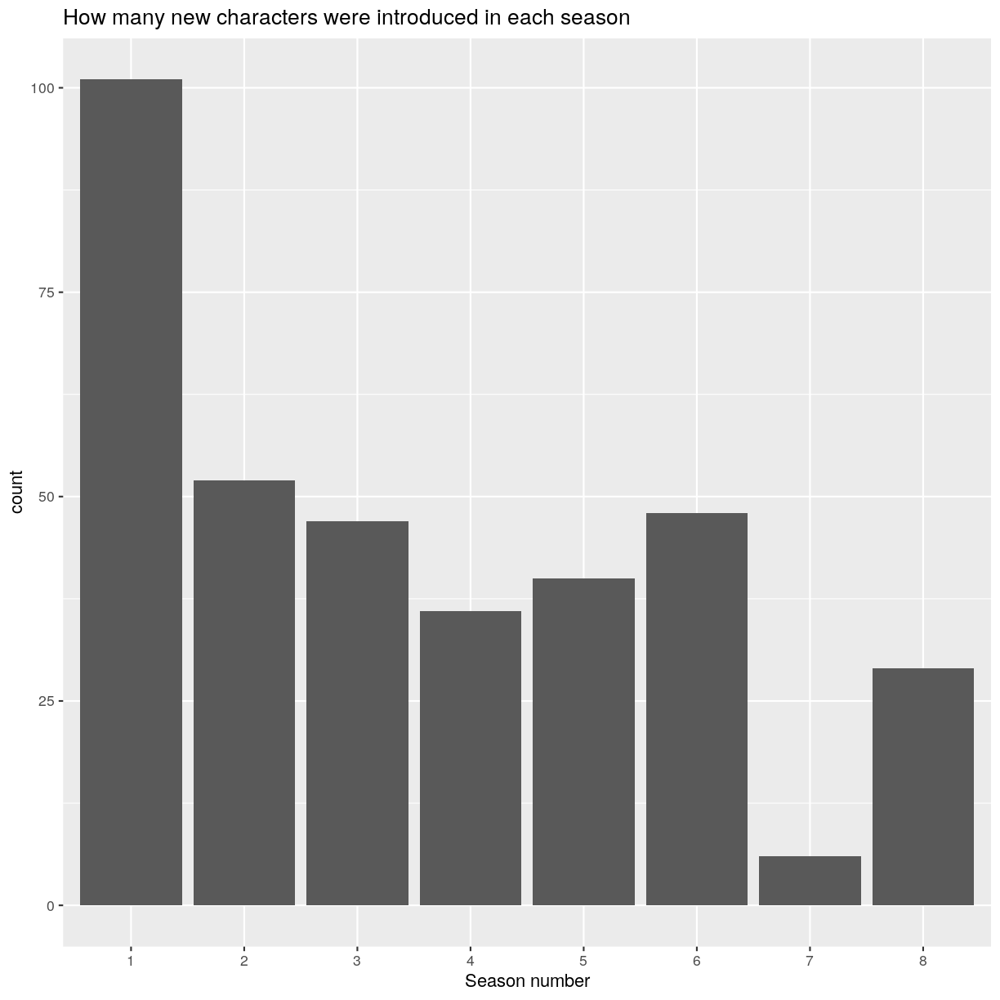
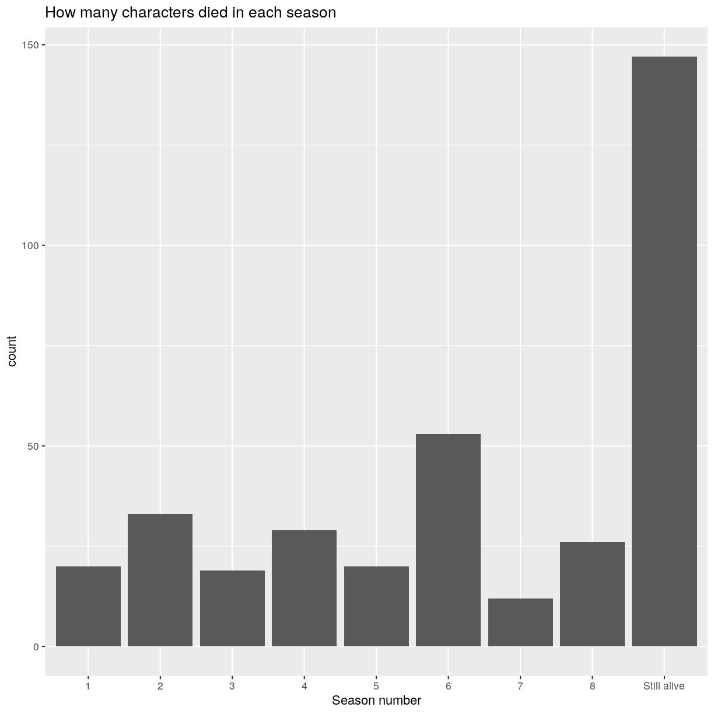
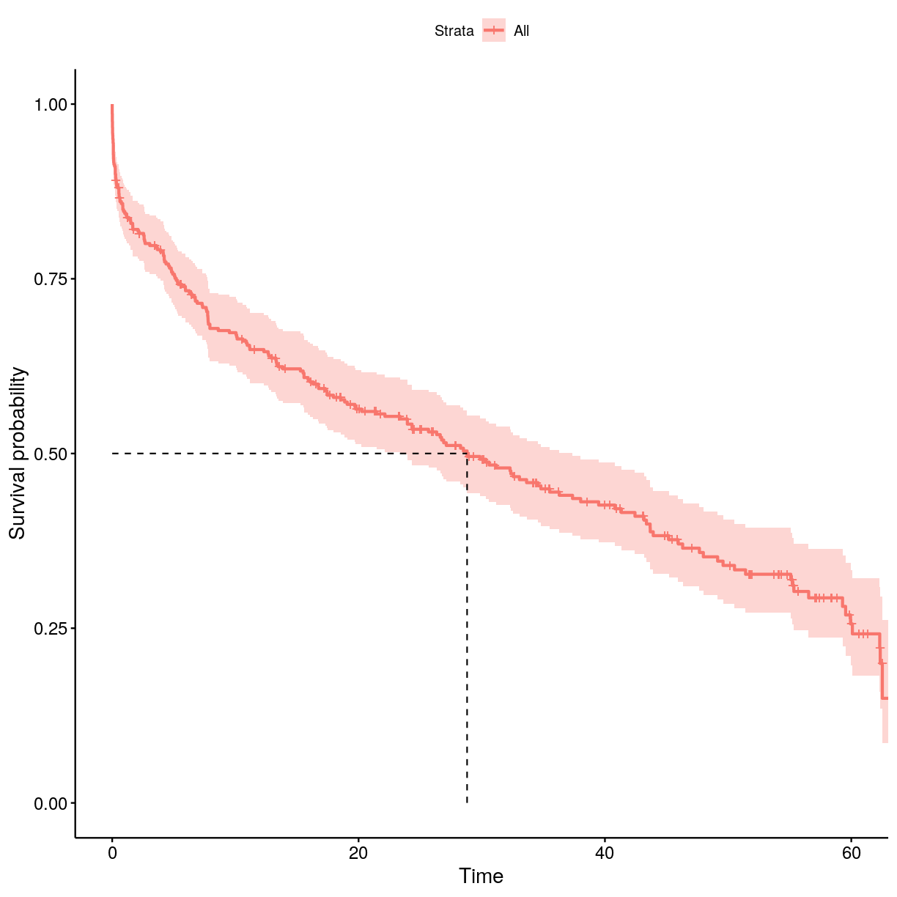
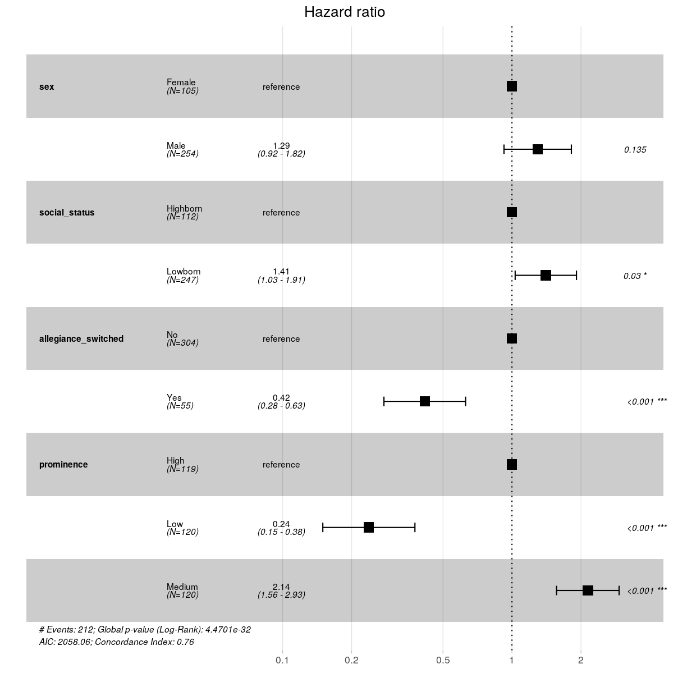

Mortality and survival in Game of Thrones
Overview
Teaching: 30 min
Exercises: 120 minQuestions
How can I perform basic graphical data visualisations?
How can I perform survival analysis?
Objectives
Explore GoT mortality dataset.
Visualise GoT dataset graphically.
Get to know the basics of suvival analyses.

Let’s start by downloading Game of Thrones characters’ mortality data, that was published here. Please save the following two files using File - Save As dialog in your browser.
- Original characters data
- Additional data encoding table
In this episode, we will provide solutions based both on base R and Tidyverse. To begin with, we will only load the dplyr package, which we will use the most. Note that we will call some of the functions from other Tidyverse packages by package_name::function_name which is a common way of calling functions without loading the whole package.
library(dplyr)
Attaching package: 'dplyr'
The following objects are masked from 'package:stats':
filter, lag
The following objects are masked from 'package:base':
intersect, setdiff, setequal, union
Challenge 1
Save the two files in your
data/directory and change the working directory to it. Now read thedata/character_data_S01-S08.csvanddata/encoding.csvfiles into R.Solution to Challenge 1
setwd('path/to/data') got_dat <- read.csv(file = "character_data_S01-S08.csv", header = TRUE, stringsAsFactors = FALSE) meta <- read.csv(file = "encoding.csv", header = TRUE, stringsAsFactors = FALSE)
Once data is loaded into R, let’s evaluate its quality.
Challenge 2
Does the table with GoT characters’s mortality data look correct? Are there any missing entries? Tip - use
base Rfunctionality to explore the data frame.Solution to Challenge 2
## make a summary for each column summary(got_dat)id name sex religion Min. :100.0 Length:359 Min. :1.000 Min. :1.000 1st Qu.:189.5 Class :character 1st Qu.:1.000 1st Qu.:4.000 Median :279.0 Mode :character Median :1.000 Median :9.000 Mean :279.0 Mean :1.292 Mean :7.042 3rd Qu.:368.5 3rd Qu.:2.000 3rd Qu.:9.000 Max. :458.0 Max. :2.000 Max. :9.000 occupation social_status allegiance_last allegiance_switched Min. :1.000 Min. :1.000 Min. :1.000 Min. :1.000 1st Qu.:1.000 1st Qu.:1.000 1st Qu.:3.000 1st Qu.:1.000 Median :2.000 Median :2.000 Median :7.000 Median :1.000 Mean :2.552 Mean :1.688 Mean :5.588 Mean :1.153 3rd Qu.:2.000 3rd Qu.:2.000 3rd Qu.:8.000 3rd Qu.:1.000 Max. :9.000 Max. :2.000 Max. :9.000 Max. :2.000 intro_season intro_episode intro_time_sec intro_time_hrs Min. :1.000 Min. : 1.00 Min. : 1 Min. : 0.00 1st Qu.:1.000 1st Qu.: 9.00 1st Qu.: 25348 1st Qu.: 7.04 Median :3.000 Median :26.00 Median : 77694 Median :21.58 Mean :3.487 Mean :29.07 Mean : 87279 Mean :24.24 3rd Qu.:5.000 3rd Qu.:49.00 3rd Qu.:146960 3rd Qu.:40.82 Max. :8.000 Max. :73.00 Max. :229649 Max. :63.79 dth_flag dth_season dth_episode dth_time_sec Min. :0.0000 Min. :1.000 Min. : 1.00 Min. : 342 1st Qu.:0.0000 1st Qu.:2.750 1st Qu.:22.25 1st Qu.: 67520 Median :1.0000 Median :5.000 Median :43.50 Median :131499 Mean :0.5905 Mean :4.571 Mean :41.55 Mean :126015 3rd Qu.:1.0000 3rd Qu.:6.000 3rd Qu.:59.00 3rd Qu.:178775 Max. :1.0000 Max. :8.000 Max. :73.00 Max. :226284 NA's :147 NA's :147 NA's :147 dth_time_hrs censor_time_sec censor_time_hrs exp_season Min. : 0.10 Min. : 342 Min. : 0.10 Min. :1.000 1st Qu.:18.76 1st Qu.:115072 1st Qu.:31.96 1st Qu.:1.000 Median :36.53 Median :190484 Median :52.91 Median :3.000 Mean :35.00 Mean :168922 Mean :46.92 Mean :3.487 3rd Qu.:49.66 3rd Qu.:230800 3rd Qu.:64.11 3rd Qu.:6.000 Max. :62.86 Max. :230800 Max. :64.11 Max. :8.000 NA's :147 exp_episode exp_time_sec exp_time_hrs featured_episode_count Min. : 1.00 Min. : 8 Min. : 0.00 Min. : 1.000 1st Qu.: 5.00 1st Qu.: 14496 1st Qu.: 4.03 1st Qu.: 1.000 Median :20.00 Median : 66551 Median :18.49 Median : 3.000 Mean :26.35 Mean : 81644 Mean :22.68 Mean : 7.805 3rd Qu.:45.00 3rd Qu.:144592 3rd Qu.:40.16 3rd Qu.: 8.000 Max. :73.00 Max. :230347 Max. :63.99 Max. :67.000 prominence dth_description icd10_dx_code icd10_dx_text Min. :0.1111 Length:359 Length:359 Length:359 1st Qu.:0.3333 Class :character Class :character Class :character Median :0.8750 Mode :character Mode :character Mode :character Mean :1.1292 3rd Qu.:1.1716 Max. :7.3425 icd10_cause_code icd10_cause_text icd10_place_code icd10_place_text Length:359 Length:359 Length:359 Length:359 Class :character Class :character Class :character Class :character Mode :character Mode :character Mode :character Mode :character top_location geo_location time_of_day X X.1 Min. :1.000 Min. :1.000 Min. :1.000 Mode:logical Mode:logical 1st Qu.:1.000 1st Qu.:1.000 1st Qu.:1.000 NA's:359 NA's:359 Median :2.000 Median :1.000 Median :1.000 Mean :2.377 Mean :1.175 Mean :2.509 3rd Qu.:2.000 3rd Qu.:1.000 3rd Qu.:2.000 Max. :9.000 Max. :2.000 Max. :9.000 NA's :147 NA's :147 NA's :147 X.2 X.3 X.4 X.5 Mode:logical Mode:logical Mode:logical Mode:logical NA's:359 NA's:359 NA's:359 NA's:359The last six columns have no entries at all and therefore should be removed to not interfere with statistical analyses.
## remove columns that only contain NAs as entries # (1) for each column, do all rows contain NAs? nas_all <- got_dat %>% # use dplyr to apply the same function to all columns # the function to be applied is provided inside list() # ~ is used to generate new column names automatically summarise_all(list(~all(is.na(.)))) # (2) which columns contain only NAs? to_remove <- which(nas_all == TRUE) # (3) remove these columns got <- got_dat[, -to_remove]
Graphical data exploration
Before proceeding into any kind of statistical analysis, it is worth exploring the dataset of interest from different perspectives.
To make graphical data visualisations, we will be using ggplot package.
library(ggplot2)
First, we will make plots to check the distribution of different variables:
Categorical:
- sex
- religion
- occupation
- social_status
- allegiance
- dth_flag
- …
Type of occupation was categorised as “silk collar” (e.g. clergy, merchants, politicians, and rulers) or “boiled leather collar” (e.g. warriors, farmers, and other occupations relying heavily on manual work).
Type of social status was categorised as “highborn” (lords, ladies, or legitimate offspring) or “lowborn” (all other characters).
Because some characters switched allegiance during the show, both their last known allegiance and whether or not they switched allegiance during the show were recorded.
Whether character died or not during the period provided in the dataset is flagged in column dth_flag.
Continuous:
- intro_season & intro_episode, season/episode number in which character first appeared
- exp_time_sec, survival time of character
- intro_time_sec, cumulative net running time when character first appeared
- dth_episode, number of the episode in which character died
- icd10_cause_text, cause of death
- prominence
- …
A proxy measure for how prominently a character featured in the show was provided in the data. This prominence score was calculated by taking the number of episodes that a character appeared in and dividing that by the number of total episodes that the character could have appeared in (i.e. the number of episodes occurring from the character first being introduced until the point of death or censoring). This ratio was then multiplied by the number of seasons that the character had featured in.
Quick question
What every other variable in the dataset is: categorical or continuous?
Distribution
To begin with, let’s compare three categorical variables, e.g. occupation vs sex vs social status.
Challenge 3
Make a bar chart to show the distribution of three categorical variables of your choice, e.g. occupation vs sex vs social status. How can you ensure that all three variables are represented in single figure? Tip - think about the aesthetics mapping in
ggplot().Solution to Challenge 3
ggplot(got) + geom_bar(aes(x = factor(occupation), fill = factor(social_status))) + facet_wrap(~sex) + scale_x_discrete(name = "occupation") + scale_fill_viridis_d(name = "social status")

This is not a very informative graph, because all categorical variables are encoded as numerical categories. Details of what number corresponds to what value are available in the data_dictionary.pdf file that you can download from the original data source link. For simplicity’s sake, we have saved them into the data/encoding.csv file, that you have loaded as meta object during Challenge 1.
Challenge 4
How can you find the values for each of the encoded categorical variable? Tip - use
tidyr::pivot_longerfunction to list all variables for each character in a separate row, then iterate over them usingdplyr::rowwiseand finally, applytidyr::pivot_widerfunction to collect all observations for each character into a single row again.Solution to Challenge 4
## (1) What are the unique categorial variables? cols_cat <- unique(meta$variable) ## (2) Use tidyr::pivot_longer to pivot data to long format: # for each character, extract all of the categorical variables into a separate row got_cat_long <- got %>% # use all_of() to force the selection of the column names listed in the variable cols_cat select(all_of(cols_cat), id, name) %>% tidyr::pivot_longer(-c(id, name), names_to = "cat_variable", values_to = "cat_code") ## (3) Extract variables' values from meta data.frame got_cat_long <- got_cat_long %>% # for each character and variable combination rowwise() %>% mutate(variable_value = ifelse( # if character and variable combination is not NA is.na(cat_code), NA, # extract the variable's value from the meta data.frame meta %>% filter(variable == cat_variable, code == cat_code) %>% select(value) %>% pull())) %>% select(-cat_code) ## (4) Use tidyr::pivot_wider to pivot data back to wide format: got_cat <- got_cat_long %>% tidyr::pivot_wider(names_from = cat_variable, values_from = variable_value) %>% # remove grouping by rows ungroup()Now that you have a data.frame with values for the categorical variables, re-run the distribution plot. Make sure that x-axis is readible. Tip - rotate the labels.
ggplot(got_cat) + geom_bar(aes(x = factor(occupation), fill = factor(social_status))) + facet_wrap(~sex) + scale_x_discrete(name = "occupation") + scale_fill_viridis_d(name = "social status") + theme(axis.text.x = element_text(angle = 90, hjust = 1))
Let’s explore this dataset more by looking into how frequently new characters were introduced into the show. Which got data.frame column store this information?
Challenge 5
Make two bar charts: one to show how many character were introduced in every season and one to show how many characters died in each season.
Solution to Challenge 5
## make a bar chart to show how many character were introduced in every season ggplot(got) + geom_bar(aes(x = as.factor(intro_season))) + scale_x_discrete(name = "Season number") + ggtitle("How many new characters were introduced in each season") Maybe this explain why season 7 is considered the worst of all?
Now, let’s plot how many characters died in each season. There are characters which have NAs in the corresponding data.frame columns. Can you add them to the plot with a more meaningful data label than NA?
## the second bar chart ggplot(got %>% ## use dplyr mutate inside ggplot to quickly modify the column only for the plot mutate(dth_season = ifelse(is.na(dth_season), "Still alive", dth_season))) + geom_bar(aes(x = as.factor(dth_season))) + scale_x_discrete(name = "Season number") + ggtitle("How many characters died in each season")
Brief overview
It is worth performing some basic statistics before diving deep into the questions that really interests you.
For example, we can check whether men and women have the same distribution of occupation using chi-square test. The chi-squared test is a statistical hypothesis test that assumes (the null hypothesis) that the observed frequencies for a categorical variable match the expected frequencies for the categorical variable.
Challenge 6
Calculate chi-square statistic between sex and occupation, or your selected categorical variables. Which of the variables are independent of the sex variable and which are dependent?
We will use function
chisq.testand setcorrect=FALSEto turn off Yates’ continuity correction.Solution to Challenge 6
## look into the number of characters in each category table(got_cat$sex, got_cat$occupation)Boiled leather collar Silk collar Unknown/Unclear Female 44 24 37 Male 177 72 5## run the test chisq.test(got_cat$sex, got_cat$occupation, correct = FALSE)Pearson's Chi-squared test data: got_cat$sex and got_cat$occupation X-squared = 80.436, df = 2, p-value < 2.2e-16It seems as if sex and occupation variables are dependent? But information of the occupation for lots of the characters is unknwon. Perhaps these should be omitted from the test.
## remove characters for which occupation is not known got_occup <- got_cat %>% filter(occupation != "Unknown/Unclear") ## rerun the test chisq.test(got_occup$sex, got_occup$occupation, correct = FALSE)Pearson's Chi-squared test data: got_occup$sex and got_occup$occupation X-squared = 1.0293, df = 1, p-value = 0.3103
The cause of death is stored in column icd10_cause_text in the original dataset. Value dth_flag == 1 indicates that character died during the period described in the dataset.
head(got[got$dth_flag == 1, "icd10_cause_text"])
[1] "Assault by knife"
[2] "Assault by knife"
[3] "Legal execution"
[4] "Assault by hanging, strangulation and suffocation"
[5] "Assault by other specified sharp object"
[6] "War operations involving firearm discharge and other forms of conventional warfare"
Challenge 7
Provide answers to the following questions:
- What percentage of characters died by the end of the period included in the dataset?
- What were the major causes of death?
Solution to Challenge 7
chars_died <- nrow(got[got$dth_flag == 1, ]) chars_total <- nrow(got) ## percentage of characters that died chars_died/ chars_total * 100[1] 59.05292To identify the most common cause of death, use base R function
tablewhich calculates frequencies of entries.causes <- table(got[got$dth_flag == 1, "icd10_cause_text"]) causes <- as.data.frame(causes[order(causes, decreasing = TRUE)]) causes$prop <- causes$Freq/chars_died * 100 cat(paste(causes$Var1, "-", causes$prop, "\n", sep = " "))Assault by knife - 27.3584905660377 War operations involving firearm discharge and other forms of conventional warfare - 24.5283018867925 Assault by smoke, fire and flames - 8.49056603773585 Assault by other specified sharp object - 5.66037735849057 Legal execution - 5.18867924528302 Assault by drugs, medicaments and biological substances - 3.30188679245283 War operations involving fires, conflagrations and hot substances - 3.30188679245283 Assault by bodily force - 2.83018867924528 Assault by unspecified means - 2.83018867924528 Assault by pushing from high place - 2.35849056603774 Bitten or struck by other mammal - 2.35849056603774 Assault by hanging, strangulation and suffocation - 1.88679245283019 Other maltreatment syndromes - 1.88679245283019 - 1.41509433962264 Bitten or struck by dog - 1.41509433962264 Assault by blunt object - 0.943396226415094 Intentional self-harm by jumping from a high place - 0.943396226415094 Intentional self-poisoning by and exposure to other unspecified drugs, medicaments and biological substances - 0.943396226415094 War operations, unspecified - 0.943396226415094 Assault by steam, hot vapours and hot objects - 0.471698113207547 Intentional self-harm by hanging - 0.471698113207547 Intentional self-harm by knife - 0.471698113207547
Survival analysis
We will use Kaplan-Meier (KM) survival analysis with Cox proportional hazard regression modelling to quantify survival times and probabilities and to identify independent predictors of mortality, respectively.
A good introduction on the topic can be found at datacamp.
Kaplan-Meier model
The survival probability is the probability that an individual survives from the time origin (here, first appearance on the screen) to a specified future time (here, end of the period described in the dataset). The KM method is a non-parametric method used to estimate the survival probability from observed survival times. The KM survival curve provides a summary of the data and can be used to estimate e.g. median survival time.
Fit data to model
We will use survival package to perform model fitting and survminer package for survival curves plots. Install and load required packages.
install.packages(c("survival", "survminer"))
library(survival)
library(survminer)
Loading required package: ggpubr
Loading required package: magrittr
First, we will fit mortality data to the KM model. Column exp_time_hrs stores survival time of character in the show (hours), column dth_flag indicates whether character has died. Let’s add these columns to the got_cat data.frame, which contains catgeorical variables values, so that all neccessary information would be in one table.
## got and got_cat have the same order, therefore we can simply take the columns from got
got_cat$exp_time_hrs <- got$exp_time_hrs
got_cat$dth_flag <- got$dth_flag
surv_object <- with(got_cat, Surv(exp_time_hrs, dth_flag))
The function survfit will be used to compute KM survival estimate. Its main arguments include:
- formula, represented by a survival object created using the function
Surv. - dataset containing the variables.
Let’s plot the survival probability vs time in the show. Also add a line for median survival time.
## survival without grouping requires to specify 1 in the formula
surv_model <- survfit(Surv(exp_time_hrs, dth_flag) ~ 1, data = got_cat)
ggsurvplot(surv_model, data = got_cat, surv.median.line = "hv")

Use the surv_model object to extract the probability of surviving at least 1 h in the show.
surv_sum <- summary(surv_model)
## probabilities of surviving less than 1 hour
probs_1 <- surv_sum$surv[which(surv_sum$time < 1)]
## probability of surviving at least 1 hour
probs_1[length(probs_1)]
[1] 0.8462928
Stratified survival
Let’s check whether survival probability differs between various groups of characters. We will stratify individuals by:
- sex
- social_status
- allegiance_switched
- prominence
To compare two or more survival curves, most commonly log-rank test is applied. Essentially, the log rank test compares the observed number of events (i.e. deaths) in each group to what would be expected if the null hypothesis were true (i.e., if the survival curves were identical).
The function survdiff can be used to compute log-rank test comparing two or more survival curves. The variable that stratifies individuals into groups have to be specified in the function’s formula.
Challenge 8
Fit KM model for the three variables: sex, social_status, allegiance_switched. You will need to specify these in the formula inside the
survfitfunction. To add obtained p-value for test to the plot, usepval = TRUEargument inggsurvplotfunction. Don’t forget to use the data.frame with string values for categorical variables so that the plots would have clear labels.Solution to Challenge 8
## stratify by sex surv_model <- survfit(Surv(exp_time_hrs, dth_flag) ~ sex, data = got_cat) ggsurvplot(surv_model, data = got, pval = TRUE)
## stratify by social_status surv_model <- survfit(Surv(exp_time_hrs, dth_flag) ~ social_status, data = got_cat) ggsurvplot(surv_model, data = got, pval = TRUE)
## stratify by allegiance_switched surv_model <- survfit(Surv(exp_time_hrs, dth_flag) ~ allegiance_switched, data = got_cat) ggsurvplot(surv_model, data = got, pval = TRUE)


In order to model survival based on prominence, which is a continuous variable, we have to categorise characters into groups (i.e. discrete variable).
Challenge 9
Divide characters into tertiles (i.e. high, medium, and low) based on their prominence. Tip - one of possible ways of doing this is with
dplyrpackage. Make a KM survival curve plot for the prominence categories.Solution to Challenge 9
prominence_cats <- c("Low", "Medium", "High") ## bin data into tertiles (n = 3) got_cat$prominence_tertile <- ntile(got$prominence, n = 3) got_cat$prominence <- prominence_cats[got_cat$prominence_tertile]## stratify by prominence tertile surv_model <- survfit(Surv(exp_time_hrs, dth_flag) ~ prominence, data = got_cat) ggsurvplot(surv_model, data = got_cat, pval = TRUE)

Cox model
Cox proportional hazards regression analysis, which works for both quantitative predictor variables and for categorical variables, extends survival analysis methods to assess the effect on survival time by of multiple risk factors simultaneously.
The function coxph can be used to compute the Cox proportional hazards regression model. Its main arguments include:
- formula, represented by a survival object created using the function
Surv. - dataset containing the variables.
Univariate Cox regression for a single variable sex.
coxph(Surv(exp_time_hrs, dth_flag) ~ sex, data = got_cat)
Call:
coxph(formula = Surv(exp_time_hrs, dth_flag) ~ sex, data = got_cat)
coef exp(coef) se(coef) z p
sexMale 0.6264 1.8709 0.1697 3.691 0.000223
Likelihood ratio test=15.24 on 1 df, p=9.462e-05
n= 359, number of events= 212
Multivariate Cox model
To perform multivariate Cox regression, all variables of interest must be listed in the formula. The obtained p-values indicate whether the relationship between survival and the given risk factor was significant. Which variables are significant in this Cox model?
cox_fit <- coxph(Surv(exp_time_hrs, dth_flag) ~ sex + social_status + allegiance_switched + prominence, data = got_cat)
print(cox_fit)
Call:
coxph(formula = Surv(exp_time_hrs, dth_flag) ~ sex + social_status +
allegiance_switched + prominence, data = got_cat)
coef exp(coef) se(coef) z p
sexMale 0.2584 1.2949 0.1727 1.496 0.1345
social_statusLowborn 0.3402 1.4053 0.1571 2.165 0.0304
allegiance_switchedYes -0.8756 0.4166 0.2092 -4.186 2.84e-05
prominenceLow -1.4369 0.2377 0.2360 -6.089 1.14e-09
prominenceMedium 0.7619 2.1424 0.1602 4.755 1.98e-06
Likelihood ratio test=156.9 on 5 df, p=< 2.2e-16
n= 359, number of events= 212
Hazard ratios (HR) are derived from the multivariate Cox model. Briefly, an HR > 1 indicates an increased risk of death if a specific risk factor is met by the individual. An HR < 1 indicates a decreased risk. Plot the obtained HR using function ggforest.
ggforest(cox_fit, data = got_cat)
Warning: Removed 4 rows containing missing values (geom_errorbar).

Challenge 10
What kind of a character was more likely to die in Game of Thrones?
Solution to Challenge 10
Character that was more likely to die in Game of Thrones:
- Male, rather than female (but not statistically significant)
- Lowborn, rather than highborn
- Those who did not switch allegiance (disloyalty pays off?)
- Characters who only featured moderately prominently (protection by the importance of the role?)
Key Points
Load data into R.
Practice using base R and Tidyverse.
Perform basic data visualisations using
ggplot2package.Perform survival analyses using
survivalandsurvminerpackages.